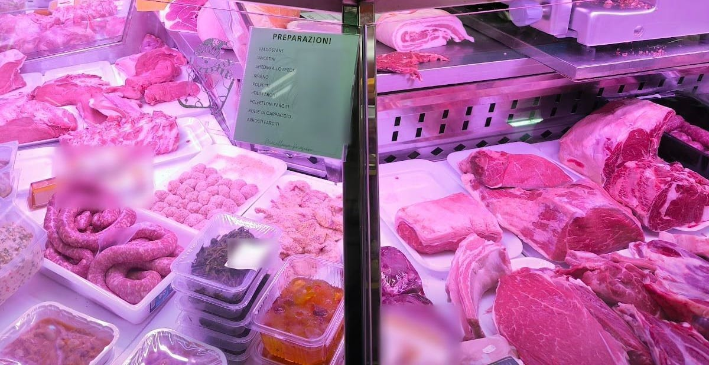

Macelleria · Largo Brasilia 4, Milano
La carne, le preparazioni, la dispensa.
Una macelleria piccola fra Via Giambellino e Via Lorenteggio, a due passi dalla M4 Gelsomini: la carne al banco, gli arrosti e i polli farciti preparati da loro, e sugli scaffali specialità da tante regioni.
«Riduttivo chiamarlo macelleria.» da una recensione su Google
4,7 su Google, 75 recensioni
Dal lunedì al sabato

Al banco
I cartellini del banco
Sul banco frigo, ognuno nella sua bustina di plastica, i loro cartelli verdi. Qui con le loro parole e senza i prezzi, come li ha fotografati un cliente: chiedete al banco cosa c'è oggi.
Manzo
- Roast-beef
- Costate con osso
- Coppa di manzo
- Polpa a fette
- Scamone
- Trita
- Brasato
Maiale
- Lonza
- Puntine
- Coppa fresca
- Salsiccia
- Pancetta fresca
- Braciole
- Salamelle
Polleria
- Cosce di pollo
- Polli
- Conigli
- Petti di pollo
- Fesa di tacchino
- Cosce disossate
- Faraone
- Galline
Preparazioni
- Valdostane
- Involtini
- Spiedini allo speck
- Ripieno
- Polpette
- Polli farciti
- Polpettoni farciti
- Rollè di carpaccio
- Arrosti farciti
I cartelli sul banco frigo. Il manzo. Il banco a Natale.
Legato al momento
Arrosti, polli farciti, involtini
Sul loro cartello delle preparazioni ci sono gli arrosti farciti, i polli farciti, gli involtini, il rollè di carpaccio, i polpettoni: pezzi che si legano con lo spago prima di andare in forno.
Gli arrotolati si fanno al momento, raccontano i clienti. Scegliete che cosa legare.
La dispensa
Non solo macelleria
Accanto al banco, sugli scaffali: pasta, sughi, vini, dolci e formaggi, sottoli e specialità da tante regioni. Le regioni sono quelle che elenca una cliente.
I produttori e le etichette si scelgono al banco: il sito non ne nomina nessuno.
Dicono
La carne, e i consigli per cucinarla
4,7 su Google, 75 recensioni
«Macelleria con carne di qualità piemontese eccellente e garantita. Da apprezzare il fatto che Alessio si rifornisce di prodotti come pasta, sughi, vini, dolci e formaggi assolutamente unici e ricercati e che non si trovano da nessun'altra parte a Milano.
Cotechini e insalata russa superlativi!»G Q Google, 6 anni fa
«Un piccolo negozio dove la professionalità è un valore tramandato. Tanti consigli positivi sia sui tagli di carne sia sul modo di cucinarli. Molti prodotti di nicchia.»
Gabriella Dell'Elice Google, un anno fa
«Ho preso un pezzo di roastbeef da fare al barbecue, davvero uno spettacolo, morbidissima, marezzata, un sapore perfetto, difficile trovare tagli di questo tipo morbidi... consigliato al 100%»
Riccardo Sacchi Google, 3 anni fa
«Molta scelta macellaio molto competente e gentile, carne ottima, arrotolati fatti al momento molto gustosi. Ribadisco dopo mesi carne da favola!!!»
marco mascio Google, 3 anni fa
«Gentilezza, professionalità ed ottimi prodotti, non solo di macelleria, ma anche sfiziosita' regionali (sottoli e sughi pugliesi, specialità campane, padane, emiliane, piemontesi, venete, liguri...in una sinfonia di piaceri per il palato. […] Consigliatissimo!»
claudia imposimato Google, 8 mesi fa
«La carne é davvero ottima ,in negozio mi hanno piacevolmente stupito anche molti altri prodotti di qualitá . Alessio il proprietario é davvero un bravissimo professionista.»
Fabio Sioli Google, 6 mesi fa
Dalle recensioni su Google, come sono state scritte. Anche la frase in alto viene da una recensione su Google. Tutte le recensioni su Google
Orari e dove
Il lunedì solo la mattina
Orari
- Dove
- Largo Brasilia 4, 20146 Milano, fra Via Giambellino e Via Lorenteggio
- In metro
- M4 Gelsomini, a circa 180 metri
- In bus
- Il 50 e il 64 in Largo Brasilia, a circa 140 metri; il 58 in Via dei Giacinti, a circa 150
- Telefono
- 02 4830 1702
Orari dalla loro scheda Google (settembre 2026). Per agosto e i giorni di festa conviene telefonare.
Domande
Prima di passare
Quando siete aperti?
Dal martedì al sabato dalle 8 alle 13:30 e dalle 15:30 alle 19:30; il lunedì solo la mattina, dalle 8 alle 13:30. La domenica è chiuso.
Che preparazioni fate?
Sul loro cartello: valdostane, involtini, spiedini allo speck, ripieno, polpette, polli farciti, polpettoni farciti, rollè di carpaccio, arrosti farciti. Chiedete al banco cosa c'è oggi.
Posso chiedere un consiglio sul taglio?
Sì: al banco, sul taglio e su come cucinarlo, lo raccontano i clienti nelle recensioni.
C'è anche altro oltre alla carne?
Sì: pasta, sughi, sottoli, vini, dolci e formaggi, con specialità di tante regioni.
Come si arriva?
Largo Brasilia 4, fra Via Giambellino e Via Lorenteggio: la M4 Gelsomini è a circa 180 metri; i bus 50 e 64 fermano in Largo Brasilia, il 58 in Via dei Giacinti.